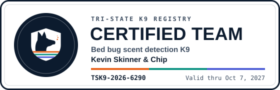
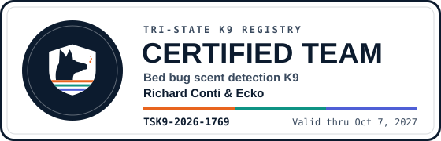
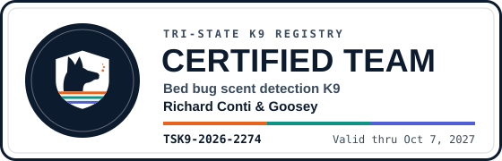
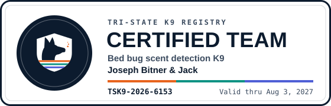
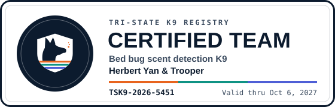
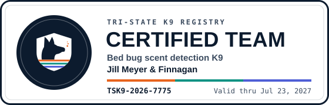
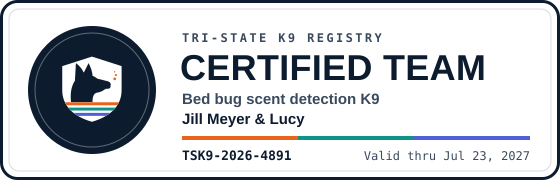

For listed teams
Registry badges
Show clients your team is listed in the Tri-State K9 registry. Each badge links to your live listing, so anyone can confirm it in one click. Badges are hosted by the Council, show your listing's valid-through date, and are taken down if a listing ends.
- Find your team below.
- Copy the embed code.
- Paste it into your website's footer, about page or inspection page.

Kevin Skinner & ChipA & C Pest Management · TSK9-2026-6290- Diana Ludwiczak & EckoDoctor Sniffs · TSK9-2026-6516
- Diana Ludwiczak & GooseyDoctor Sniffs · TSK9-2026-5642
- Diana Ludwiczak & SouthyDoctor Sniffs · TSK9-2026-4141

Richard Conti & EckoDoctor Sniffs · TSK9-2026-1769
Richard Conti & GooseyDoctor Sniffs · TSK9-2026-2274- Richard Conti & SouthyDoctor Sniffs · TSK9-2026-7199
- Ruben Jorge & RoxyNYC Bed Bug Inspections · TSK9-2026-4615

Joseph Bitner & JackNYC Bed Bug Inspections · TSK9-2026-6153- Colby Slappey & LunaNYC Bed Bug Inspections · TSK9-2026-1499
- Paul Kelcz & BugsyNo More Pests Control · TSK9-2026-4358
- Scott Palatnik & HunterLong Island Bed Bug Inspections · TSK9-2026-3581
- Glen Wheelock & MatchaM & M Pest Control · TSK9-2026-7793

Herbert Yan & TrooperM & M Pest Control · TSK9-2026-5451- Eric Miller & MochaExpress Bed Bug Inspection · TSK9-2026-2420
- Alex Hernandez & IsaacDiamond Dogs · TSK9-2026-6215

Jill Meyer & FinnaganHarlem River Hounds · TSK9-2026-7775
Jill Meyer & LucyHarlem River Hounds · TSK9-2026-4891- Lynnette Milleville & RoseNutmeg Farm LLC · TSK9-2026-9035
Badges may only be used by the team shown, while its listing is current. Questions? Use the contact form.